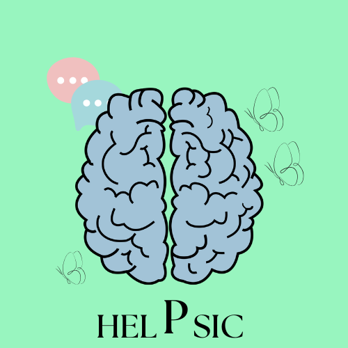

|  | HELPSIC | |
| Ayuda mental anonima, desahogate. | ||
| Consejos CHAT Foros | ||
Bienvenido a HELPSICEste sitio web fue desarrollado con un solo proposito, ayudar a hombres y mujeres a mejorar su salud mental. |
||
PROPOSITO | ||
Nuestro proposito es ser un medio de inicio, para que las personas puedan comenzar a abrir sus sentimientos y externar su dolor, romper el estigma de que tus problemas son tuyos, de que el hombre no llora, etc... |
||
NO ESTÁS SOLO |
||
|
En HELPSIC hay desarrolladores que se preocuparon por tu bienestar y crearon esta página, para que hoy puedas desahogarte y mejorar, además de que hay decenas de personas esperando a que les cuentes como te sietes, quieren ayudarte. | ||
¡ESTAMOS PARA TI, ERES MUY IMPORTANTE! | ||
|
Dir: Cecytes Granados Tel: 634 109 4276 En honor a: Todos aquellos hombres y mujeres que guardan su sentir y no vieron salida. Especialmente a Oliver "mudo" Marrujo 2025 HELPSIC @base. Todos los derechos reservados. |
||